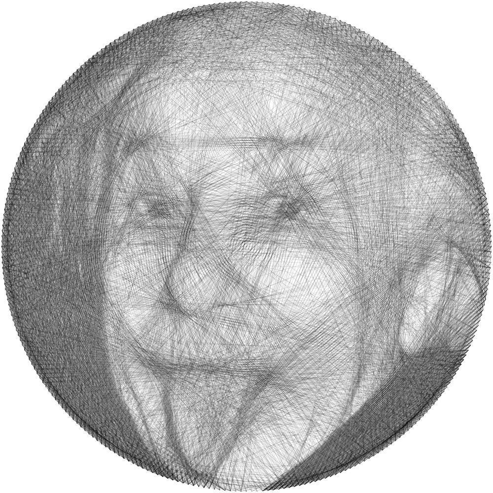

Generates images using lines. The program places 100 nails evenly around a circle over a grayscale photo, then works greedily: from the current nail it tries a straight line to every other nail, keeps the one that passes over the darkest remaining pixels, draws it, and lightens those pixels before choosing the next. It runs for up to 350 lines, tracks the error against the original image, and saves the nail sequence to nail_order.npy.

Einstein, 1951 (photo: Arthur Sasse, public domain). 5,000 lines between 288 nails, using the same greedy line-picking approach with lines that lighten rather than erase pixels, so the thread keeps building up tone.
A recursive fractal tree generator. Starting from a single trunk, every branch splits into two children at ±30°, each 0.67 times the length of its parent, for 10 levels (1,023 segments in all).
Drawn from FractalTree.py's parameters, rendered here as SVG in one color.